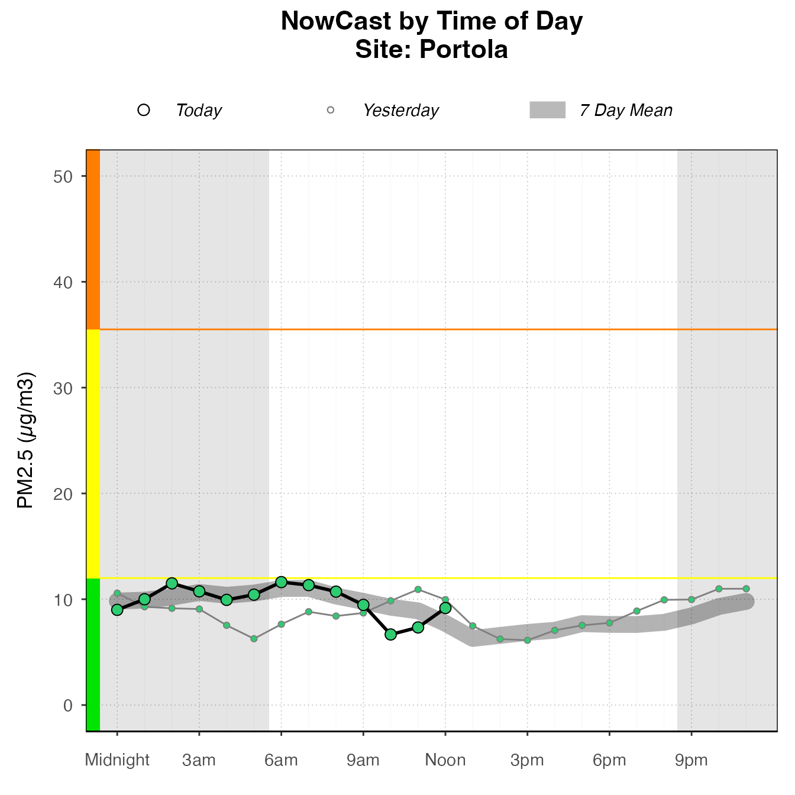

Plotting Current Data
Helen Miller
2020-09-15
Source:vignettes/articles/plotting_current_data.Rmd
plotting_current_data.RmdAirMonitorPlots provides functions to easily generate stylized plots of current data.
library(AirMonitorPlots) # Load current Data ws_monitor <- loadLatest()
# Set parameters monitorID <- "060771002_01" enddate <- lubridate::now() startdate <- enddate - lubridate::ddays(7)
Timeseries
monitor_ggTimeseries( ws_monitor, startdate = startdate, enddate = enddate, monitorIDs = monitorID )

Daily Barplots
monitor_ggDailyBarplot( ws_monitor, startdate = startdate, enddate = enddate, monitorID = monitorID )

Diurnal (dailyByHour)
monitor_ggDailyByHour( ws_monitor, startdate = startdate, enddate = enddate, monitorID = monitorID )
